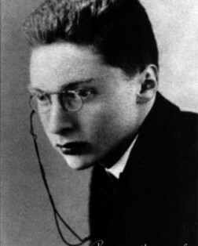

For Jakobson, literature is not defined by subject matter (love, war, politics) but by how language is structured. A text becomes literary when it foregrounds its own verbal artistry and activates the poetic function.

The Poetic Function of Language
Jakobson argues that language has several functions (referential, emotive, conative, phatic, metalingual, poetic). Literature is dominated by the poetic function, in which:
The focus is on the message for its own sake.
Attention is drawn to sound, rhythm, repetition, parallelism, metaphor, and structure.
Form becomes as important as (or more important than) content.
Foregrounding and Defamiliarization
Building on ideas associated with Russian Formalism (especially Viktor Shklovsky), Jakobson sees literary language as making the familiar strange. It disrupts automatic perception and forces readers to notice how language works.
Words are arranged not just for meaning but for similarity in sound, rhythm, or structure.
Patterns (rhyme, meter, repetition) become structurally central.